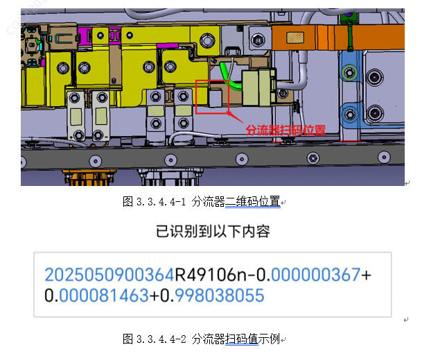
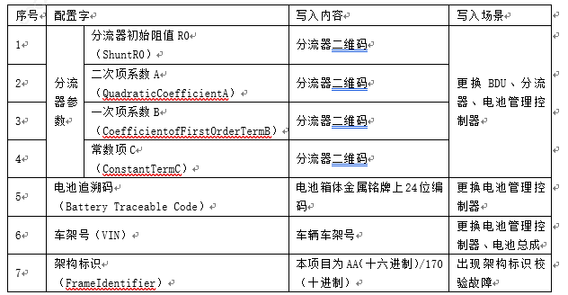

① Использовать ZLG CANFD для мониторинга тяговой аккумуляторной батареи в сборе, убедиться, что система управления аккумуляторной батареей не сообщает о неисправностях; при наличии неисправностей выполнить проверку в соответствии с процедурой устранения соответствующих неисправностей; ② После сборки аккумуляторной батареи использовать Специальный приспособление для проверки герметичности, чтобы заглушить разъемы высокого и низкого напряжения тяговой аккумуляторной батареи, использовать прибор для проверки герметичности для проведения проверки (метод показан в 4.7); если проверка не пройдена, уведомить технического специалиста для анализа причины и ее устранения; после успешного прохождения проверки выполнить Установка аккумуляторной батареи на автомобиль в соответствии с требованиями раздела 5.5; ③ После сборки автомобиля сначала удалить неисправности автомобиля с помощью Диагностический прибор; после повторного включения Питание считать Код неисправности автомобиля, если неисправностей нет, автомобиль работает нормально; если неисправности по-прежнему присутствуют, выполнить устранение неисправностей в соответствии с соответствующими Код неисправности. ④ При замене контроллера управления аккумуляторной батареей, шунта или BDU перед закрытием крышки аккумуляторной батареи использовать устройство для сканирования штрих-кодов, чтобы отсканировать QR-код шунта в BDU, как показано на Рисунке 3.3.4.4-2 "Пример значения сканирования шунта". Считать и записать начальное сопротивление шунта R0, коэффициент квадратичного члена A, коэффициент линейного члена B, свободный член C. (Например: R0=49.106, A=-0.000000367, B=0.000081463, C=0.998038055)

⑤ При замене контроллера управления аккумуляторной батареей, шунта или BDU выполнить перепрошивку программного обеспечения контроллера управления аккумуляторной батареей с помощью Диагностический прибор; после восстановления автомобиля необходимо использовать специальные Функция в блоке управления аккумуляторной батареей BMS на Диагностический прибор для записи начального сопротивления шунта R0, коэффициента квадратичного члена A, коэффициента линейного члена B и свободного члена C в контроллер управления аккумуляторной батареей. ⑥ При замене контроллера управления аккумуляторной батареей или аккумуляторной батареи в сборе выполнить перепрошивку программного обеспечения контроллера управления аккумуляторной батареей с помощью Диагностический прибор; после восстановления автомобиля необходимо использовать специальные Функция в блоке управления аккумуляторной батареей BMS на Диагностический прибор для записи кода отслеживания аккумуляторной батареи и VIN автомобиля в контроллер управления аккумуляторной батареей.
⑦ Список слов конфигурации:
